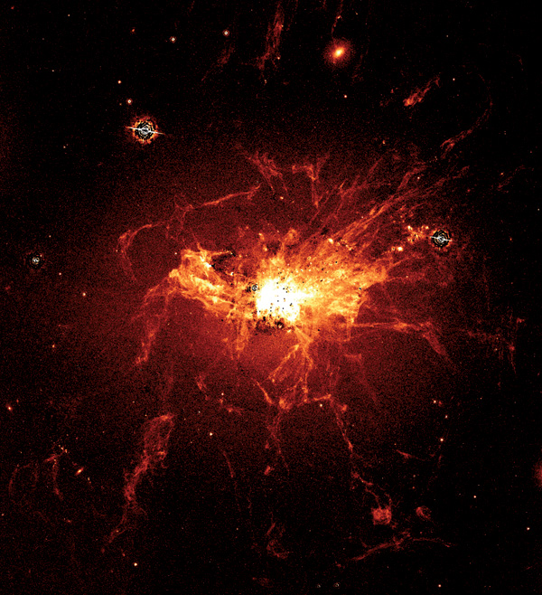
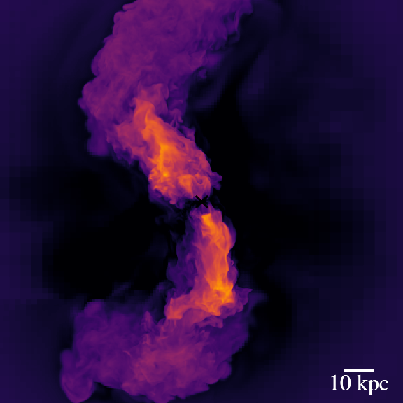
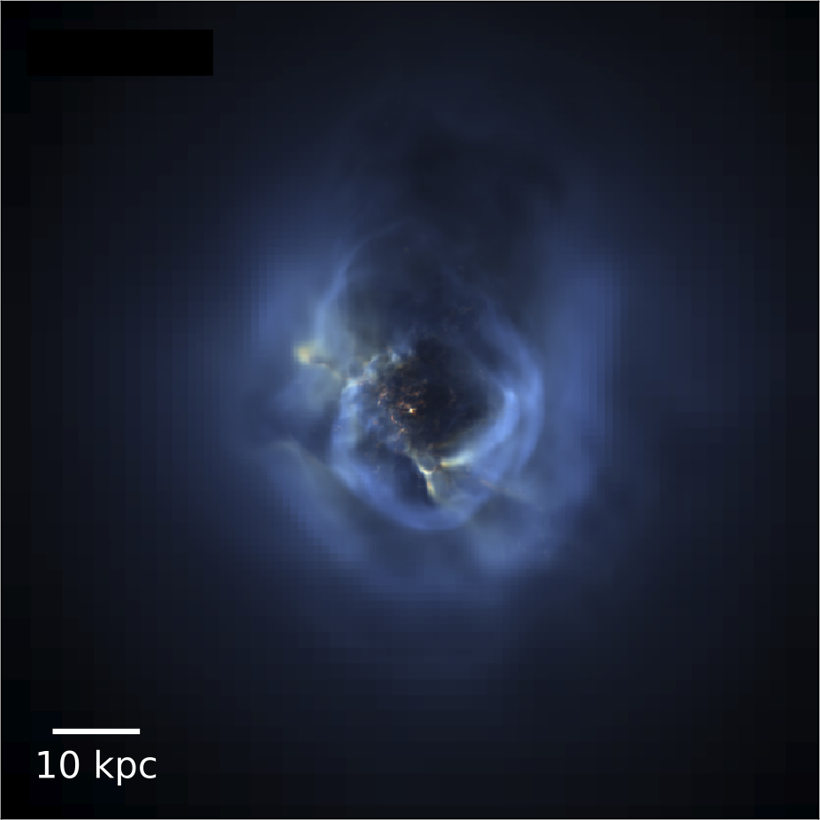

gas Life cYcle around galaxies: oRIgin and state of Cold accretion Streams
Fed by cold gas cooling from the cosmic web, active galactic nuclei found in the brightest cluster galaxies drive powerful jets that inflate large X-ray cavities in the surrounding intra-cluster medium. The energy thus deposited is thought to balance the cooling of intracluster gas, and keep the cluster in gobal hydrostatic equilibrium. However, observations of nearby clusters, particularly Perseus, show an extended nebula of cold gas filaments in the centre that appear preferentially aligned with the jet bubbles. Recent work has suggested that these filaments are either formed by local thermal instabilities, due to the turbulence induced by AGN feedback, or uplifted behind the buoyantly rising AGN bubbles. However, many open questions remain as to their origin and properties.
 An image of the Perseus cluster taken using the Hublle space telescope (Fabian 2008). The bright, extended filaments are clearly visible around the central galaxy. I am responsible for producing the simulations for the LYRICS collaboration, to study the origin and properties of cold gas filaments in clusters in collaboration with my colleagues at the Institut d'Astrophysique de Paris, and the Observatoire de Paris. This work is part of a multi-disciplinart effort to understand the cold gas life-cylce in clusters, that also involves observers and specialists in emission line modelling, based at the Observatoire de Paris. With this triple approach, we hope to understand the origin and properties of the observed gas, both on small scales and in the context of its hot clusters.
 An image showing the hot jets (yellow) extending to large scales from the cluster center
To study the formation these filaments, we conduct simulations of an isolated galaxy cluster. At the beginning of the simulation, the cluster consists of a hot gaseous halo with a black hole located at the center (marked on images shown here by a cross). As the gas starts cooling and falling onto the cluster center, some of it gets accreted by the black hole. In response, the black hole drives fast, hot jets into the hot gas that inflate large bubbles. These bubbles can be seen particularly well in mock x-ray observations, such as the image shown below. As well as the black hole and its feedback, we also model star formation, and stellar feedback, which helps to keep the cluster center hot.
 Mock x-ray observations produced from the simulation, that show the large bubbles blown by the black hole driven jet, which appear here as darker regions in the bright hot, gas.
The huge bubbles blown by the black hole driven jet, stir the gas and slow down cooling before they dissipate. This does not entirely prevent further dense gas from forming but does ensure that some regions of the cluster are more thermally unstable as others. The dense gas that does form therefore shows a wide range of shapes and sizes, as can be seen in the six snapshots of the simulation shown below. Some look very similar to observations, while others appear to be more clumpy. We are still studying why this gas takes this particular shape but the black hole driven jets seem to continue to play an important role. Once formed, the dense gas continues to interact with the jets. In the process, it is accelerated outwards from the cluster center, and a non-negligible portion of it is heated sufficiently to be mixed back into the hot gas, thereby reducing the total amount of dense gas in the cluster center. In the process, large, filamentary structures fracture into small clumps, which then fall back onto the cluster center, where they continue to feed the black hole and act as seeds for more cold gas condensation, thereby closing the cluster feedback cycle.
This cyclic evolution of the cluster can be particularly clearly seen in the movie shown below. As can be seen in the movie, th cluster undergoes repeated cycled here cold gas forms before being destroyed by the feedback from the black hole. The formation and evolution of cold gas in massive galaxy clusters is therefore complex, but intricately linked to black hole driven jets.
For more information on this work, have a look at our paper or on the LYRICS website:
Paper: "Dense gas formation and destruction in a simulated Perseus-like galaxy cluster with spin-driven black hole feedback"